实验步骤¶
下面给出 Lab1 的推荐完成顺序和关键提示。建议按 sleep -> pingpong -> find -> 启动流程调试 的顺序完成。
先分清命令在哪执行
VSCode或其他编辑器：主要用来写代码、看文件、修改Makefile。Linux 终端：主要执行git clone、git checkout util、make qemu、make grade等命令。XV6 命令行：进入 XV6 后，在$提示符后运行sleep 10、pingpong、find . b等程序。GDB 命令行：本页第 4 节使用，例如si、c、p cpus[$tp]->proc->name。
1. 准备实验环境¶
1.1 选择运行环境¶
如果你还没有准备好实验环境，请先阅读实验平台。
1.2 获取 XV6 源码¶
下面这些命令都在 Linux 终端 中执行。
如果你还没有下载仓库，可以执行：
cd ~
git clone https://gitee.com/ftutorials/xv6-oslabs-hitsz.git
cd xv6-oslabs-hitsz
如果你之前已经克隆过仓库，直接进入仓库目录即可：
cd ~/xv6-oslabs-hitsz
克隆成功后，你通常会看到类似输出：
Cloning into 'xv6-oslabs-hitsz'...
done.
1.3 切换到 Lab1 对应分支¶
Lab1 基于 util 分支完成。请在 Linux 终端 中执行：
git checkout util
git pull
如果你想先看看当前有哪些分支，可以额外执行：
git branch -a
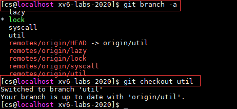
1.4 编译并启动 XV6¶
先在 Linux 终端 中进入 xv6-oslabs-hitsz 目录（也就是能看到 Makefile 的那个目录），再执行：
make qemu
如果看到：
init: starting sh- 以及后面的
$提示符
就说明 XV6 已经正常启动了。此时你输入的命令是在 XV6 命令行 中执行，而不是在 Linux 终端中执行。
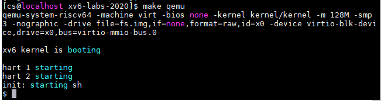
退出 QEMU
如果想从 XV6 回到 Linux 终端，请先按 Ctrl+a，完全松开后再按 x。
2. 开始前的最小准备¶
如果你对命令行还不太熟，不必一次学很多。对 Lab1 来说，建议先弄清楚下面这些最基本的内容：
- 目录相关：
.、..、/分别表示什么； - 常用命令：
cd、mkdir、echo、find； - 管道和重定向：
|、<、>； - 常用系统调用名字：
fork、exit、wait、open、close、read、write、pipe、dup。
如果上面这些概念还不熟，可以先回看实验原理。尤其建议先看：
3. 编写用户程序¶
建议按下面的顺序完成：先做 sleep，再做 pingpong 和 find。
3.1 先完成 sleep¶
这一步的目标不是追求难度，而是先让你熟悉“新增用户程序 -> 修改 Makefile -> 编译 -> 在 XV6 中运行”的完整流程。
第 1 步：在编辑器中新增 user/sleep.c
在 VSCode 或其他编辑器中，新建 user/sleep.c，并写入下面的示例代码。程序休眠指定的 tick 数后，输出实际休眠时长，因此运行 sleep 10 时会显示 Sleep 10。
#include "kernel/types.h"
#include "user/user.h"
int
main(int argc, char *argv[])
{
if(argc != 2){
printf("Sleep needs one argument!\n");
exit(-1);
}
int ticks = atoi(argv[1]);
sleep(ticks);
printf("Sleep %d\n", ticks);
exit(0);
}
第 2 步：把程序加入 UPROGS
由于 sleep.c 是新程序，还需要在 Makefile 的 UPROGS 中增加一行：
$U/_sleep
UPROGS 是什么？
UPROGS 列出了要被编译并打包进 XV6 文件系统镜像的用户程序。只有加到这里，程序启动后才能在 XV6 命令行中直接运行。
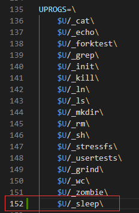
第 3 步：在 Linux 终端中重新编译并启动 XV6
make qemu
第 4 步：在 XV6 命令行中运行程序
XV6 启动后，在 $ 提示符后输入：
sleep 10
如果程序运行正常，程序会先休眠 10 个 ticks，随后输出 Sleep 10，再回到 shell。

第 5 步：完成后回答本页 3.3 中的问题
3.2 再完成 pingpong 和 find¶
做完 sleep 之后，你已经知道如何把一个用户程序加入 XV6。下面重点就变成：理解程序逻辑本身。
一个小提醒
xv6 的用户程序不能直接使用常见的 C 标准库（例如 stdio.h 里的很多功能）。实验中可用的辅助函数主要在 user/ulib.c 和相关头文件里。
3.2.1 pingpong¶
请在 user/pingpong.c 中实现实验概述要求的功能。建议边写边对照实验原理中的文件描述符和 I/O 操作、管道两节。
可以按下面的思路实现：
- 新建
user/pingpong.c。 - 创建两条管道：一条负责父进程发给子进程，另一条负责子进程发回父进程。
- 使用
fork()创建子进程，并根据返回值区分父子进程。 - 父子进程分别关闭自己不用的管道端口。
- 父进程写入一条消息，子进程读到后打印，再写回一条消息给父进程。
- 别忘了把程序加入
UPROGS。
如果程序一直卡住
优先检查是否有哪个不用的读端或写端忘了 close()。pingpong 最常见的问题不是逻辑本身，而是文件描述符没有关对。
3.2.2 find¶
请在 user/find.c 中实现实验概述要求的功能。
可以按下面的思路实现：
- 新建
user/find.c。 - 先参考
user/ls.c，理解目录是怎样被打开和读取的。 - 按
find <path> <name>的形式读取参数。 - 使用
open()和fstat()判断当前路径是普通文件还是目录。 - 如果是目录，就依次读取目录项；如果名字匹配，就输出路径。
- 如果读到的还是目录，就递归继续查找。
- 递归时一定要跳过
.和..。 - 别忘了把程序加入
UPROGS。
调试 find 的建议
- 先让它能处理普通文件；
- 再让它能处理目录；
- 最后再加递归。
这样更容易定位问题。
补充：运行测试与常见问题¶
等 sleep、pingpong 和 find 都基本完成后，先回到 xv6-oslabs-hitsz 目录（也就是能看到 Makefile 的那个目录），再在 Linux 终端 中依次执行：
./grade-lab-util sleep
./grade-lab-util pingpong
./grade-lab-util find
make grade
如果提示 /usr/bin/env: 'python': No such file or directory
个别环境里只有 python3，而测试脚本调用的是 python。这时可以执行：
sudo ln -s /usr/bin/python3 /usr/bin/python
建立符号链接后，再重新运行测试命令即可。
3.3 回答问题¶
一、阅读sleep.c，回答下列问题
- 当用户在xv6的shell中，输入了命令
sleep hello world\n，请问argc的值是多少？argv数组大小是多少？ - 请描述main函数参数argv中的指针指向了哪些字符串，它们的含义是什么？
- 程序sleep使用了哪些系统调用？
二、了解管道模型，回答下列问题
- 简要说明在pingpong实验中，你是怎么创建管道的？结合fork系统调用说明你是怎么使用管道在父子进程之间传输数据的。
- 再次阅读实验原理-管道这一节中给出的关于
wc命令的示例程序，假设子进程没有关闭管道写端，在Linux环境下编译运行后执行ps指令，我们发现会多一个永不结束的wc进程，为什么会有如下结果？
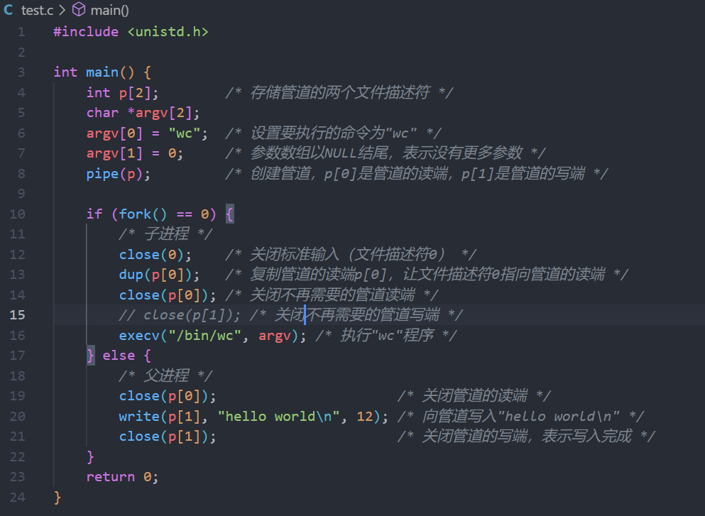
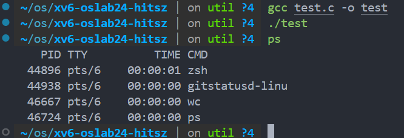
4. xv6 启动流程分析¶
本节要求
Lab1 的 XV6 启动流程实验要求使用 命令行 GDB 完成。请优先阅读 调试指南 ，再开始本节操作。
本节命令在哪执行
- 启动
make qemu-gdb CPUS=1和make gdb：在Linux 终端中执行。 - 进入 GDB 后的
si、s、n、c、b main、p cpus[$tp]->proc->name：在GDB 命令行中执行。
补充资料
如果你在这一节卡住了，建议观看由我校录制的这两个讲解视频：使用gdb调试xv6启动流程（1）、使用gdb调试xv6启动流程（2）。
4.1 先理解 RISC-V 特权级，再抓住启动主线¶
先分清 RISC-V 的 3 个特权级：
M态（Machine mode）：CPU 刚启动时最先运行在这里。S态（Supervisor mode）：xv6 内核运行的主要状态。U态（User mode）：用户程序运行的状态，例如initcode、init、sh，以及你之后写的sleep、pingpong、find。
本节先抓住一条主线即可：M -> S -> U。
你会遇到的几个关键词如下：
mret：从M态返回到S态；ecall：从U态进入S态，请求内核服务；sret：从S态返回U态，继续执行用户程序。
再记住下面这条启动主线：
- QEMU 把 xv6 放进内存，并从
0x1000附近开始执行。 - 进入
_entry（kernel/entry.S），准备栈。 - 进入
start（kernel/start.c），完成从M态进入S态的准备。 - 进入
main，初始化内核。 userinit()创建第一个用户进程initcode。scheduler()通过swtch()切换到这个进程。- 返回用户态后，开始执行
initcode。 initcode执行exec("/init")，把自己替换成init。init启动 shell，于是你看到了init: starting sh和$。
4.2 先把调试环境启动起来¶
请先阅读 GDB 命令行调试指南 中的“1. 开始前准备”，按以下顺序启动调试环境：
- 请先确认已安装
gdb-dashboard。如果尚未安装，请参考 1.2 安装gdb-dashboard完成安装。 - 在第一个终端执行 2.1 启动 QEMU 并等待 GDB 连接 中的命令；
- 在第二个终端执行 2.2 启动 GDB 中的命令。
4.3 调试时先记住这几条规则¶
- 看汇编时，优先用
si。 - 看 C 代码时，通常用
s或n。 - 遇到汇编函数（例如
swtch、userret）时，往往还是要改用si。 c表示继续运行到下一个断点。p cpus[$tp]->proc->name用来查看当前 CPU 正在运行的进程名。
4.4 按检查点调试启动流程¶
建议按检查点观察，不必一条指令不落地硬跟到底。
检查点 1：0x1000 到 _entry¶
QEMU 一开始会从 0x1000 附近执行一小段启动代码，随后跳到 0x80000000 附近，开始运行 xv6 的第一个关键入口 _entry。
- 在 GDB 中用
si往前走几步； - 观察 PC 地址变化；
- 确认自己已经进入
_entry。
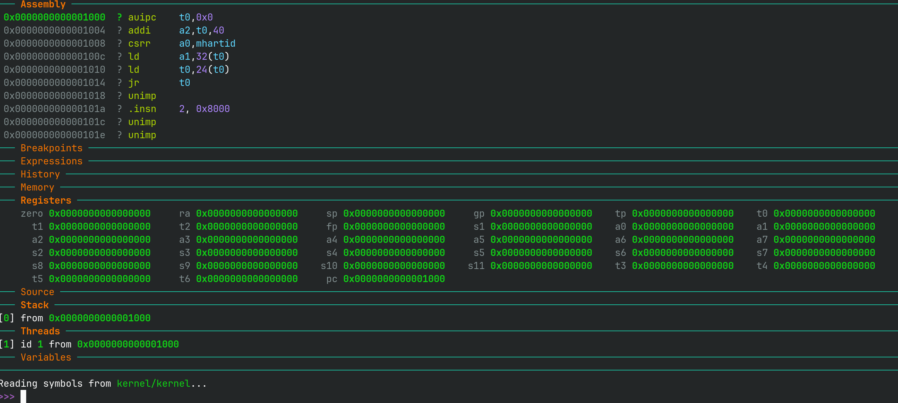
检查点 2：_entry 到 start¶
_entry 的主要工作，是为当前 CPU 准备好栈；有了栈，后面才能正常调用 C 函数。之后程序会进入 start。
看到两条指令，不要慌
你在 entry.S 里看到的某条伪指令，在 GDB 里可能会展开成多条真实指令。例如 la sp, stack0 可能会被展开成 auipc 和 addi。这是正常现象。
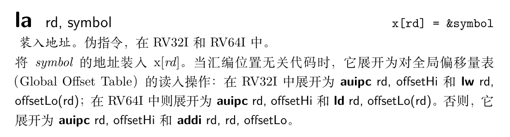
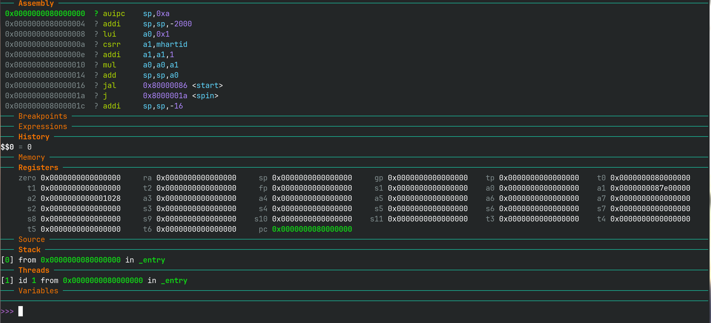
检查点 3：start 到 main¶
进入 start 后，重点看两件事：
start会完成从M态到S态的切换准备；start结束后会跳到main。
建议你在 GDB 中执行：
b start.c:58
c
p main
p/x $mepc
这 4 条命令的含义分别是：
b start.c:58：在start.c第 58 行打断点；c：继续运行到断点；p main：打印main的地址；p/x $mepc：以十六进制打印寄存器mepc的值。
如果后面两个值一致，就说明 start 已经把接下来要执行的位置设成了 main。
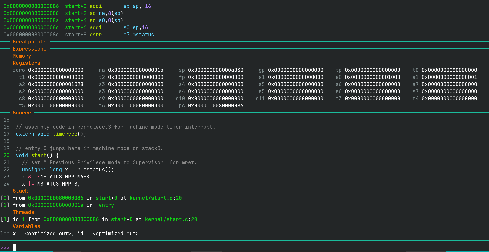
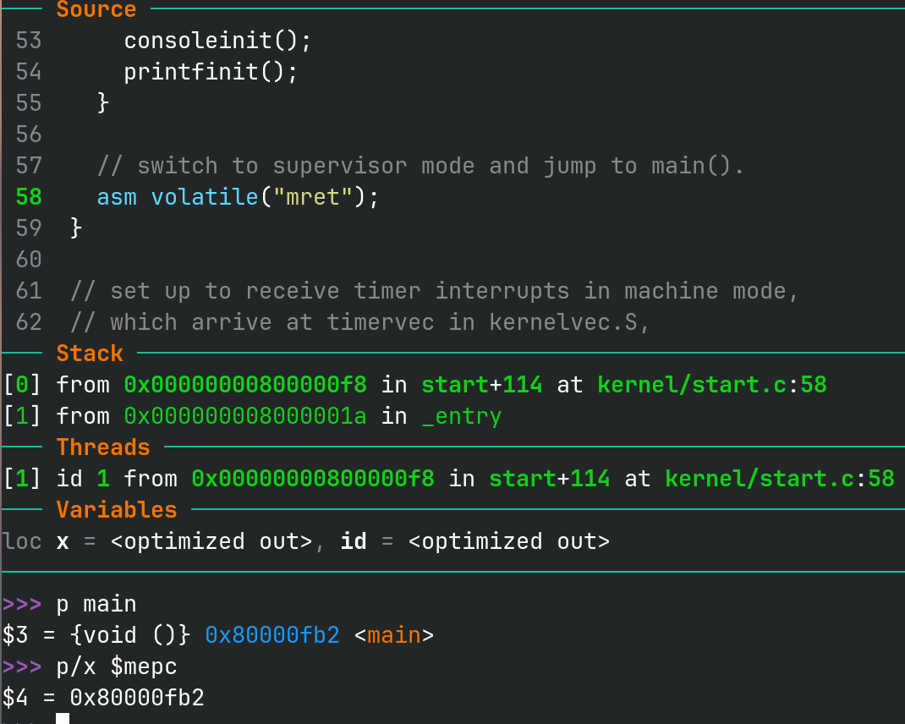
关于 p 命令
p variable：打印变量当前的值。p &variable：打印变量的地址。p/x expression：以十六进制打印表达式的值。p $register：打印某个寄存器当前的值。
检查点 4：main 到 initcode¶
对 Lab1 来说，这里重点看 main -> userinit() -> scheduler() -> swtch() 这条线。
main会初始化内核；userinit()会创建第一个用户进程initcode；scheduler()会调度它运行；- 程序随后经过
forkret、usertrapret、userret，最终通过sret回到用户态。
调试 swtch 时常要用 si
swtch 是汇编函数。这里如果发现 s 跟不进去，就改用 si。
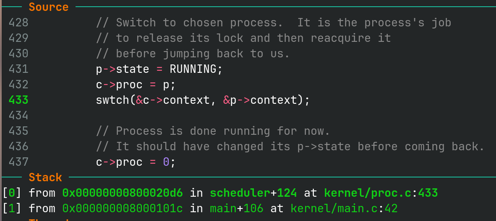
检查点 5：打印出 initcode¶
当你确认已经切到第一个用户进程后，在 GDB 中执行：
p cpus[$tp]->proc->name
如果看到的是 initcode，说明你已经抓到了第一个关键结果。
检查点 6：从 initcode 到 init¶
initcode 接下来只做一件事：执行一次 exec("/init")，把当前进程映像替换成真正的 init 程序。
也就是说，进程还是原来的进程，但它运行的程序已经从 initcode 变成了 init。
如果你想继续看 init 的源码
进入用户态 init 程序后，可以在 GDB 中执行：
add-symbol-file user/_init
这样更容易把地址和 user/init.c 中的源码对应起来。
检查点 7：打印出 init¶
在 exec("/init") 之后，再次执行：
p cpus[$tp]->proc->name
如果这时看到的是 init，说明你已经完成了本实验最核心的观察：先看到 initcode，再看到 init。
4.5 整理 commands.gdb¶
调试完成后，请按照实验概述中的要求整理并检查 commands.gdb。如果你需要查看更详细的导出方法，可回看实验概述和 GDB 调试指南 。
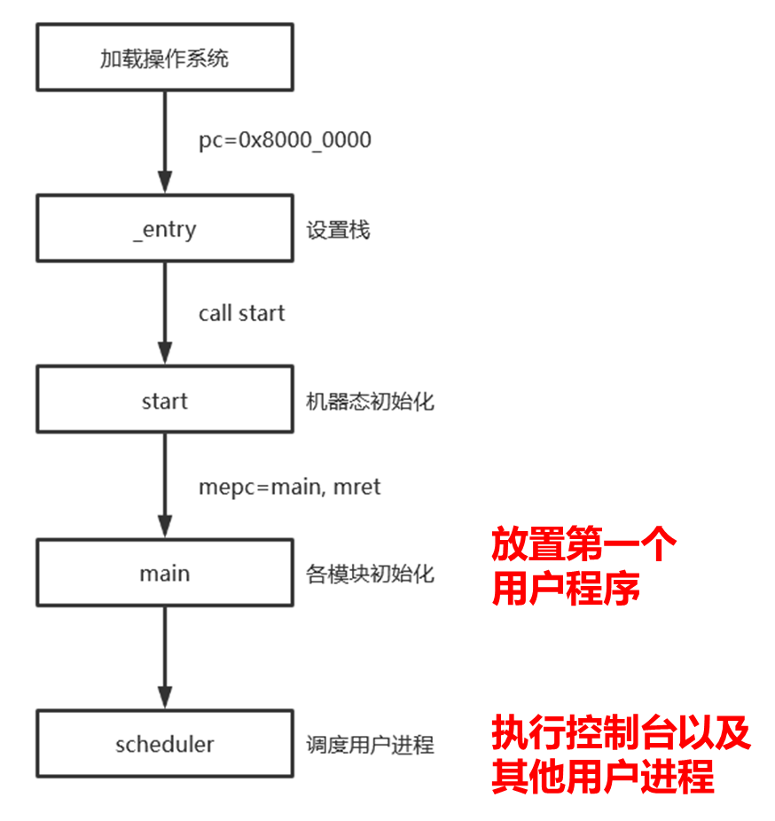